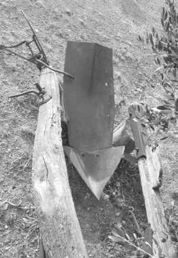

Attrezzi
La grande varietà di lavori compiuta dal contadino era svolta con l'ausilio di numerosi attrezzi, grandi e piccoli, ed ognuno aveva il suo specifico impiego nelle coltivazioni.
Ai piccoli attrezzi tradizionali come zappe, vanghe, ubbidienti, forche, falci e falcini presenti in tante varietà e di proprietà del colono, si riscontrava poi nei poderi l'uso di alcuni arnesi e utensili dalle forme più strane, creati dal contadino per facilitarsi il lavoro o per avere le mani libere: un corno di bove diventava un porta forbici a potare, un semplice gancio di ferro serviva per appendervi il pennato dietro la vita, e un pezzo di ferro un piccolo incudine portatile per battervi le lame delle falci. A questi ricordati si affiancavano gli attrezzi maggiori come i coltri, coltrine, erpici a quarantadenti, ma il principale il più necessario mezzo usato dal contadino era il carro. Questo insostituibile mezzo, "tirato" da vacche e bovi, permetteva al contadino di smuovere quantità enormi di materiali e prodotti, senza il quale il lavoro nei poderi non sarebbe stato possibile. Vi caricavano ogni ben di dio: grano, paglia, fieno, legna, fastella, carbone, tini, sacchi di farina, botti d'acqua, pietre, breccia, tutto quello che era necessario e anche il concio da spargere nei campi. Come tutti i mezzi aveva bisogno di manutenzione ed essendo di legno doveva essere protetto dal sole e dall'acqua, per questo era posteggiato sotto la parata.
La regola era avere due carri in un podere: uno più vecchio e malandato per il trasporto del concio, l'altro più bello tenuto ben verniciato per i servizi migliori. La proprietà del carro poteva essere del contadino, o del padrone e in questo caso rientravano nelle stime degli attrezzi.
Nel 1949 nella Fattoria di Passeggeri quasi tutti i contadini usavano carri di loro proprietà insieme ai carri stimati:
Alberino: 1 carro del colono e 1 a stima;
Bellavista: 2 del colono e 1 a stima;
Casanuova: 2 a stima;
Castagnoli I: 1 del colono e 1 a stima;
Castagnoli II: c.s.;
Monastero I: 2 del colono e 1 a stima;
Monastero II: 2 del colono;
Passeggeri: 1 del colono e 1 a stima;
Poggio Benichi: 3 del colono;
Torre I: 2 del colono;
Torre II: 1 del colono e 1 a stima.
In totale, negli 11 poderi della fattoria di Passeggeri, vi erano 25 carri dei quali 16 di proprietà contadina.
La stima dei carri di proprietà padronale, come di tutti gli attrezzi, dipendeva dalla qualità, ma generalmente era molto modesta oscillando tra le 300 e le 5.000 lire, con l'eccezione di quello dell'Alberino, evidentemente nuovo di zecca, valutato 30.000 lire. La stessa differenza si nota in tre botti da rame al podere Monastero; la prima malandata e usurata vale 47 lire; la seconda 127 lire e la terza 12.500 lire.
La fabbrica dei carri non era nè qui nè là, ma bastava un esperto falegname e un fabbro per farne uno. C'erano, però, antiche tradizioni in vari paesi dove i carrai del posto erano rinomati in tutto il Chianti e i loro carri erano una garanzia di robustezza e durata.
"I carrai di Lecchi erano famosi come la Ferrari oggi", rammenta Armando Losi, mentre Bruno Sestini ricorda che
"I carri venivano fabbricati dai carrai che erano a Lecchi in Chianti o anche Lucignano dall'Anichini. Un carro, se tenuto bene, durava mezzo secolo. I Sestini fecero il loro carro a San Giusto delle Monache".
Marcello Landi:
"A Viareggio avevano due e anche tre carri dei quali uno fatto a Viareggio con Brunetto Rossi. Divisero il tiro (quel grosso palo che dal giogo finisce dividendosi nel carro) con una sega a telaio, tipo quella usata anche dai "segantini" del Valdarno. Brunetto poi a casa lavorava sponde, traverse e costruiva le ruote alle quali veniva messo il cerchione. Una vera arte".
Ho già rammentato la partenza dei Carli da Petroio nel 1958 che portano via il carro nuovo fatto dal Felloni di Vagliagli quattro anni prima:
"Era fatto con un olmo di 20 anni; il tiro era di cascia stagionata che se ci battevi l'ascia si rompeva. Il tiro doveva essere robusto perchè i bovi con la loro mole l'avrebbero rotto. I carri vecchi avevano cerchioni di 3 cm, il nuovo carro fu fatto di 4 cm come richiesto dalle leggi comunali per le strade a sterro". Infatti il R. D. del 1923 stabiliva le nuove misure per i carri a trazione animale in vigore dal 31 dicembre 1926, fissando in 40 mm la larghezza per trasporti da 6 a 10 q.
Anche i carri pagavano il bollo: 5 lire all'anno. A seguito della Legge del 1933 si obbligava ad inchiodare sul carro una targhetta metallica che riportasse la proprietà, il peso, la portata e la larghezza del cerchio delle ruote. Il carro aveva sette pali ben appuntiti per il trasporto del fieno e grano e servivano tutti; erano infilati sulle traverse del carro. La Cavicchia di ferro serviva per tenere il carro attaccato al gioco, mentre il cavicchione era quel palo lungo che serviva da cavalletto per il carro fermo. Era a 50 cm dalla fine del tiro, in posizione verticale, poi tolto e rovesciato, faceva da cavalletto. Naturalmente anche i carri avevano un freno, chiamato "martinicca". Era una fune tirata a mano che azionava due grosse zeppe alle ruote che drusciandovi sopra rallentavano l'aire del carro.

L'aratro
Fin dall'antichità l'uomo si è preoccupato di alleviare la sua fatica nella produzione agricola e uno dei primi strumenti è stato l'aratro trainato da animali addomesticati siano stati buoi o cavalli. Ce ne è voluto del tempo per vedere sviluppare questo attrezzo rimasto per millenni della stessa forma, con un tiro in legno e un ceppo (vomere) sempre di legno, munito in seguito di una punta metallica, che ancora lavorava nei nostri campi nel Novecento, con uno e due manici per guidarlo. La sua possibilità di entrare in profondità nel terreno era minima,
"appena raschiava", per questo in antico si usava il sistema della vangatura profonda molto più efficace. Con l'avvento nel Novecento del coltro a volta orecchio la qualità della coltratura aumentò, ma ci volle il trattore con i primi aratri metallici a due orecchi verticali per ottenere il massimo sia nel tempo impiegato sia nella qualità.
Il coltro del Poderino.
Varie
Voltando ancora le pagine dei registri della fattoria di Passeggeri si trovano alle stime morte del 1949 una serie di macchine e attrezzi di proprietà della fattoria, ma che in quegli anni del dopo guerra già possedevano quasi tutti i poderi. C'erano mezzi antichi e altri di recente introduzione che il Senatore metteva a disposizione dei propri contadini. Li cito in ordine sparso:
voltaorecchio (coltro); voltaorecchio con stanga; coltrine; coltro Nardi; caldaia; caldaia fornello; pompe irroratrici; pompa da rame; solforatrice; solforina; estirpatore; botte da rame; falcione a macchina; falcione a volano; zappini da grano; catini; trinciaforaggi; mazza di ferro; aratro Melat; carro con botte e tinello; carretto di stalla; palo ferro e mazza; mastelli da bovi; bigoncioli da bovi. Mancano naturalmente i piccoli attrezzi posseduti da ogni contadino di proprio conto e le altre macchine della fattoria, disponibili per tutti i poderi.
Paragrafo successivo
La Fattoria
Inizio pagina
Vai all'Indice dei Capitoli